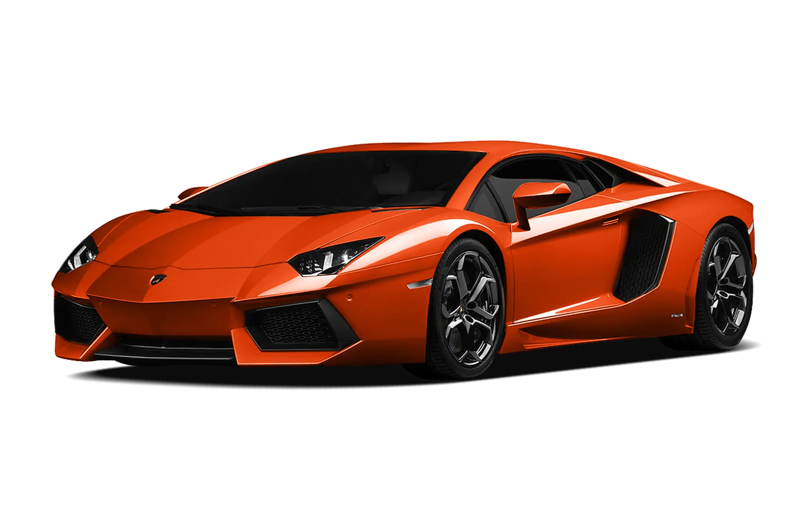
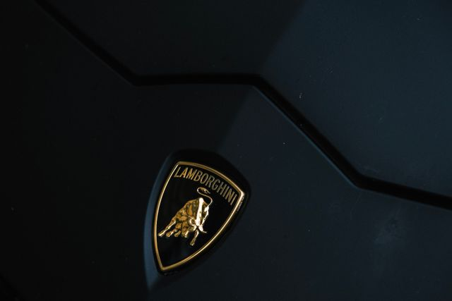

Como nasceu a Lamborghini?
Provavelmente você já conhece a Lamborghini, uma das marcas de carros esportivos mais famosas do mundo. Mas talvez você não saiba como uma empresa que começou fabricando tratores acabou se tornando uma das maiores referências em supercarros.
Então acompanhe este artigo para conhecer um pouco da história da Lamborghini e entender como a marca chegou aos incríveis carros que conhecemos atualmente.
O começo de tudo
A história da Lamborghini começou na Itália, quando Ferruccio Lamborghini, que já trabalhava com máquinas agrícolas, decidiu criar sua própria empresa de automóveis.
A Automobili Lamborghini foi fundada em 1963, em Sant'Agata Bolognese, na Itália. Desde o começo, Ferruccio queria produzir carros esportivos que combinassem desempenho, conforto e sofisticação.

Um dos primeiros modelos produzidos pela empresa foi o Lamborghini 350 GT. O carro ajudou a mostrar que a nova fabricante italiana poderia competir com marcas esportivas já consagradas.
Surge uma nova era
Com o passar dos anos, a Lamborghini começou a criar carros cada vez mais marcantes. Um dos grandes responsáveis por isso foi o Lamborghini Miura, apresentado na década de 1960.

O Miura ficou conhecido por seu design revolucionário e por utilizar um motor V12 em posição central-traseira, uma configuração que se tornaria muito importante para os futuros supercarros da marca.
Depois dele vieram modelos que ajudaram a construir a identidade da Lamborghini, como o Countach e o Diablo.

O Countach, especialmente, ficou famoso por suas linhas extremamente agressivas e pelas portas em formato de tesoura, características que ajudaram a transformar a Lamborghini em um símbolo dos supercarros.
A evolução até os dias atuais
A Lamborghini continuou evoluindo seus carros ao longo das décadas, mantendo o motor V12 como uma das principais características da marca.

Em 2011, surgiu o Lamborghini Aventador, equipado com um motor V12 naturalmente aspirado de 6,5 litros. O modelo trouxe uma combinação de desempenho, tecnologia e design que marcou uma nova geração da Lamborghini.
E entre suas versões mais extremas estava o Aventador SVJ.

O Aventador SVJ foi desenvolvido para levar o desempenho do Aventador ainda mais longe, recebendo melhorias aerodinâmicas, redução de peso e outras modificações voltadas para desempenho.
O touro da Lamborghini
Mas você já parou para pensar por que a Lamborghini utiliza um touro em seu símbolo?

O touro se tornou uma das principais marcas da identidade da empresa. Ferruccio Lamborghini era apaixonado por touradas e pelo mundo dos touros, e essa paixão acabou influenciando a identidade da marca.
A relação também aparece nos nomes de diversos modelos da Lamborghini, muitos deles relacionados ao universo das touradas e dos touros.

Assim, o touro acabou se tornando muito mais do que um símbolo: ele passou a representar a força e a personalidade dos carros da marca.
Então é isso! Espero que você tenha gostado do nosso artigo sobre a história, os carros e algumas das curiosidades da Lamborghini.